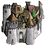
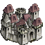
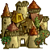

| Übersicht,
Newbies und Fragen |
|
Stadtbild
|
| Kydaoye (RIP) |
Ich habe 100% Elfen in meiner Stadt und dann müsste die Grafik die angezeigt wird doch auch die einer Elfenstadt sein oder nicht? :P
bei mir sieht das aber nu aus wie von einer Menschenstadt ist das normal oder worin irre ich mich?^^
|
07.09.09 14:46

|
|
| Thorgrim Trotzstirn (RIP) |
sollte ne elfenstadt sein... mal den chache gelöscht? |
07.09.09 16:11
|
|
| Jolina (RIP) |
Uraltes Grafikpack auf Platte?
Guck mal was für ne Datei geladen wird bei deiner Stadt.
 town.gif allgemeine Stadt town.gif allgemeine Stadt
 town1.gif Menschen-Stadt
 town2.gif Zwergen-Stadt
town3.gif Elfen-Stadt
 town4.gif Halblings-Stadt
town5.gif Wichtel-Stadt
town6.gif Halbork-Stadt |
07.09.09 16:17
|
|
| Yedlik san Dale (RIP) |
Wenn deine Stadt Licht der Hoffnung ist, dann kann es daran liegen, dass die 3000 Einwohner nicht erreicht sind. Soweit ich weiss wird eine Stadt erst ab 3000 rassenspezifisch. |
07.09.09 20:30
|
|
| Kydaoye (RIP) |
Es ist aufjedenfall eins von den beiden oberen städten...
aber 100% Elfen...
Grafikpack ist in ordnung :P |
07.09.09 20:31
|
|
| Kydaoye (RIP) |
Nee nee ich meine Dun air Muir Anfai
und da sind glaube ich gerade um die 36k drinn...
und ich habe gerade auch nochmal nachgefragt und jemand anders sieht die gleiche grafik..
war auch sonst eigentlich immer die elfenstadt grafik...
|
07.09.09 21:03
|
|
| Nalon din Adun (RIP) |
Kurz eine Armee drauf abgestellt?
Dann ist es bis zur nächsten Hauptrunde "kaputt" |
07.09.09 22:08
|
|
Alberix, Sohn des Duglim
 |
Ich weiss ist jetzt ne äh..dumme Frage:
Hast du 100% Elfen oder hast du erst mal 100% Elfen eingestellt? |
07.09.09 22:27
 |
|
| Kydaoye (RIP) |
Hmmm also von einer Armee war da nichts zu sehn...
ich habe da selber noch eine in der Kaserne aber sonst nichts...
xD also darauf hätte ich schon noch geachtet^^
sind 100% Elfen drinne^^
ich meine es ist ja nicht schlimm das da ne andere Grafik ist aber es wundert mich halt... |
08.09.09 0:33
|
|
| Kydaoye (RIP) |
Ist wieder normal weiß nur nicht seit wann :P
|
11.09.09 17:26
|
|
| Nai`hra von Borbra (RIP) |
Soweit mir bekannt bekommen Städte erst über 50.000 Einwohner ihre eigene Grafik. Vorher sehen sie alle aus wie Menschenstädte. |
12.09.09 1:45
|
|
Übersicht,
Newbies und Fragen
|